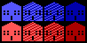

There are various buildings throughout the cities you'll have to district. Some will just hold voters, whereas others will change voters' interest in the election depending on whether a district has one or not.

Homes are the most common type of building by far. Each home is worth (originally) 100, 50, 30, or 10 votes for a party. The brighter the home, the more voters for that party. Other buildings tend to shift these values, making them all shift up so that 10 vote tiles become 30, 30 become 50, and 50 become 100, or shift down. If they do shift down, the 100 vote tiles WILL NOT SHIFT. These people are loyal to their party no matter what it does.
Schools are for children and children are the future! There isn't a politician in the world who wants to be associated with hating kids. Including one of these in a district does nothing. Schools are expected to be there and won't win you any voters. However, be wary of not including a school in a district. You'll be perceived as uncaring and cruel, and the blue votes will shift up a level.
Police stop crime and if there's one thing your party strives to be, it's tough on crime. Including a police station in a district will make all red votes shift up a level.
Fire departments aren't an issue. After years of budget cuts, there are no fire departments in the state. So you will never see one and even if you did, it wouldn't do anything.
Hospitals provide health care to those who can afford it. One thing blue loves to whine about is the idea that health care should be free. This is silly. Regardless, if they see people (who can afford it) receiving health care in their district they'll be less inclined to whine so much. Include one of these in a district to make all blue votes shift down a level.
Prisons are where all the dope smokers go. Experts predict by the year 2008 more than 1% of the American adult population will be behind bars. That's a lot of sickos kept off the streets. Despite your party being tough on crime, they don't want these dangerous criminals in their backyards. Including a prison in a district will make all red votes shift down a level.
Voter Registration Drives are a strange thing indeed. They will motivate the party perceived to be losing to get out and vote. Who is expected to lose is determined by the polls, which is calculated by taking the number of red homes and the number of blue homes and seeing which is smaller. It doesn't matter how many votes a home would get, all homes count as 1 vote for these polls. Whichever party is losing, has their apathetic voters get a lot more interested. All homes worth 10 votes for the poll-losing party are bumped up to being worth 50 votes!